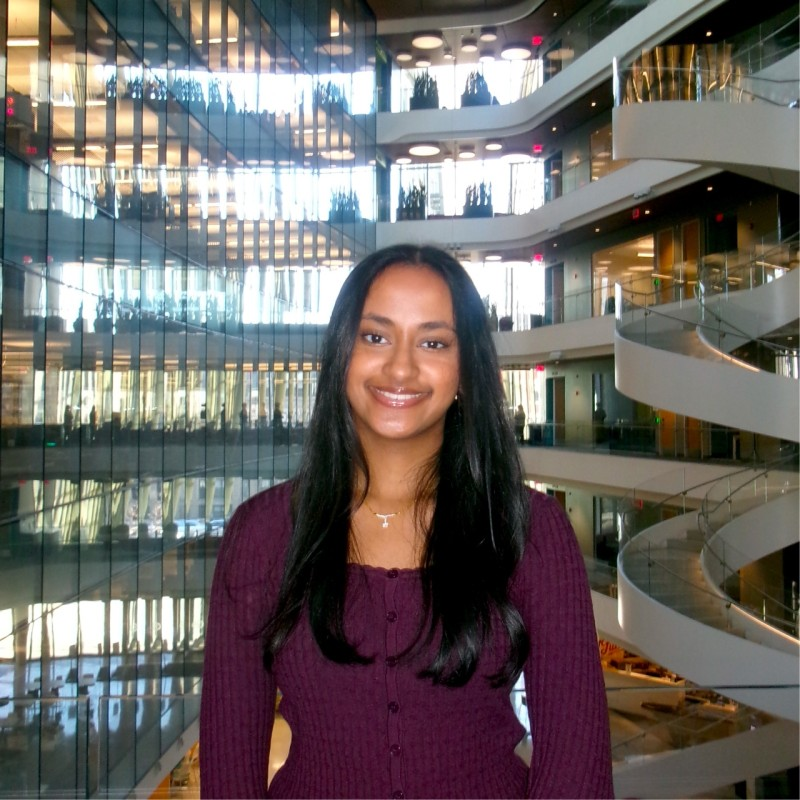

Hi, I'm Rohita!
I'm a Data Science and Biochemistry student at Northeastern University with a 3.87 GPA, passionate about using data to solve real-world problems across both computational and scientific domains. My dual focus gives me a unique perspective — I think analytically like a data scientist and experimentally like a scientist.
On the data side, I've worked on projects involving predictive modeling, database systems, and interactive visualizations — including analyzing TMDB movie data to model popularity drivers using linear regression, and building a full-stack health monitoring app as a technical lead at the ViTAL Hackathon. I've also interned as a Data Analyst at Anlitiks Inc., where I built patient-count maps in R and executed SQL queries in AWS Athena to support real-world evidence studies.
On the science side, I've explored cancer research, designing and presenting a poster on BMP4's role in breast cancer metastasis and analyzing preclinical statin experiments. My biochemistry coursework has given me hands-on lab experience in techniques like gel electrophoresis, bacterial transformation, and DNA extraction.
Outside of academics, I'm involved in organizations like ViTAL, Oasis, and NU Women in Tech, and I love exploring Boston, going to concerts, and finding the best chai spots in the city. Feel free to look around and reach out — I'd love to connect!